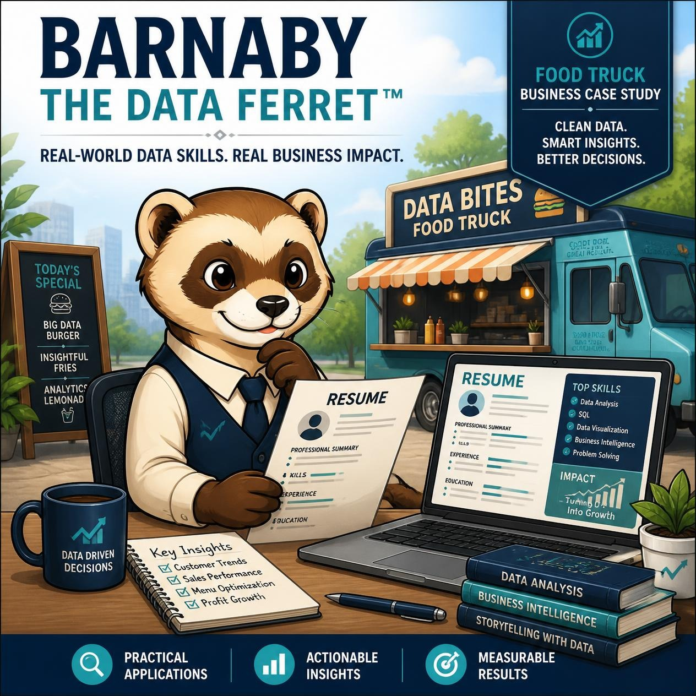

One Repository. Unlimited Tailored Resumes.
Stop maintaining dozens of resume files. Organize your accomplishments, skills, projects, technologies, and professional summaries in one source of truth, then generate customized resumes in minutes.
🎥 Watch Demo 💳 Purchase 🐾 Return to The BurrowUse AI to organize your experience. Do not use AI to invent your experience.
If I have to do it twice, there's probably a better way.